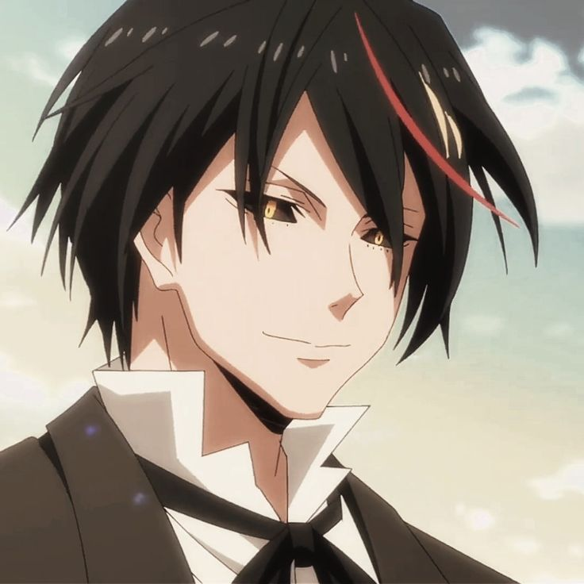

-
alice von ataraxia
Descrição
Como ex-chefe da família Ataraxia, ela foi uma das dez melhores da torre no passado. Ela foi traída pelo tabu de seu clã e foi presa com sua família no Corredor dos Caídos.
-
misumi makoto
Descrição
Misumi Makoto é um estudante secundarista no Japão, que tem arco e flecha como hobby, e até mesmo faz parte do clube de arqueiros de sua escola como vice-presidente. Conhecido como um bom arqueiro, certo dia ele é convocado pelo deus da Lua, Tsukuyomi, para se tornar o herói de um outro mundo, um mundo de fantasia.
-
rimuru tempest

Descrição
Rimuru Tempest é o principal protagonista da série, fundador e Rei do país dos monstros Tempest da Grande Floresta de Jura, no passado já foi um humano chamado Satoru Mikami, mas, após ser esfaqueado e quase morto, ele renasceu como um "Slime" (Monstro de Lodo) tornando-se o Grande Lorde Demônio.
-
eren yeager

Descrição
Depois de ser engolido por uma titã, Eren foi capaz de se transformar em um titã. Ele é muito mais forte do que a média titã, e é capaz de derrubar todo um grupo de titãs rapidamente. Nesta forma, ele é um titã de 15m, com cabelos negros na altura dos ombros, orelhas pontudas, e uma enorme boca.
-
diablo
Descrição
Como uma existência espiritual, o Diablo sem nome não tinha forma física. Mas sempre que ele foi invocado e tomou carne, ele era uma beleza cujo sexo era indeterminável. Ele possuía cabelos vermelhos (WN), enquanto seus olhos tinham íris douradas e escleras negras.